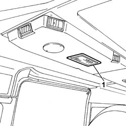

7040E19 ROOF LAMP (ONE) ON THE AIR DUCT/CONVEYOR - R.R.
- Path
- Procedures > 70 FITTINGS > 7040 BODY INTERIOR FITTINGS AND TRIM > 7040E INTERIOR COURTESY LIGHT SYSTEM > 7040E19 ROOF LAMP (ONE) ON THE AIR DUCT/CONVEYOR - R.R.
- Kind
- repair procedure (removal / refitting; the operation number is the code)
- Applies to
- all engines; all production periods
- Interactive page
- https://sloeber94.github.io/elrnDB-fDct/en/#/244001519
Applies to: all engines; all production periods
 Removing
Removing
 Refitting
Refitting- Disconnect the negative battery terminal.
- Using a suitable tool, release the courtesy light and disconnect the electrical connection.
1. Remove the courtesy light

Applies to: all engines; all production periods; only with equipment: Supplementary air conditioner
Refitting
Removing- Connect the electrical connection for the courtesy light and fit it in the housing.
- Connect the negative battery terminal.